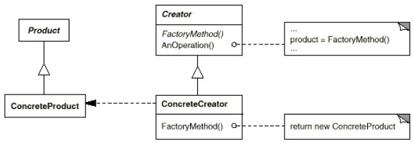

Connu aussi sous le nom de constructeur virtuel.
But : définir une abstraction pour créer un objet, mais déléguer l'instanciation aux sous-classes.
Exemple du labyrinthe
On veut créer deux variantes du jeu :-
EnchantedMazeGame, qui utilise des portes et des pièces enchantées (DoorNeedingSpell et EnchantedRoom).
-
BombedMazeGame, qui utilise des murs et des pièces piégées (BombedWall et RoomWithBomb).
Mais dans toutes les nouvelles variantes de jeu, on ne souhaite pas changer le layout (la disposition des parties du jeu).
Rappel : on a
public class MazeGame{
public static Maze createMaze(){
// création des MapSite
Maze aMaze = new Maze();
Room r1 = new Room(1);
Room r2 = new Room(2);
Door theDoor = new Door(r1, r2);
// layout, partie qui n'a pas besoin de changer
// ...
}
}
Coment faire pour pouvoir créer différentes sortes de Maze ?
Factory method
Une solution consiste à externaliser la création des objets dans des sous-classes deMazeGame.
Dans
MazeGame.createMaze(), on remplace les appels à des constructeurs des composant par des factory methods.
Chaque sous-classe de
MazeGame redéfinit les factory methods spécifiques à une variante du jeu.
MazeGame.createMaze() modifiée :
package maze.patterns.factorymethod;
import maze.model.*;
import static maze.model.Direction.*;
// Creator et Concrete creator
public class MazeGame{
public static Maze createMaze(){
Maze aMaze = makeMaze();
Room r1 = makeRoom(1);
Room r2 = makeRoom(2);
Door theDoor = makeDoor(r1, r2);
aMaze.addRoom(r1);
aMaze.addRoom(r2);
r1.setSide(NORTH, makeWall());
r1.setSide(EAST, theDoor);
r1.setSide(SOUTH, makeWall());
r1.setSide(WEST, makeWall());
r2.setSide(NORTH, makeWall());
r2.setSide(EAST, makeWall());
r2.setSide(SOUTH, makeWall());
r2.setSide(WEST, theDoor);
return aMaze;
}
// factory methods
public static Maze makeMaze(){
return new Maze();
}
public static Room makeRoom(int n){
return new Room(n);
}
public static Wall makeWall(){
return new Wall();
}
public static Door makeDoor(Room r1, Room r2){
return new Door(r1, r2);
}
}
Sous-classes avec composants adaptés
package maze.patterns.factorymethod;
import maze.model.*;
import maze.model.enchanted.*;
// Concrete creator
public class EnchantedMazeGame extends MazeGame{
// factory methods
public static Room makeRoom(int n){
return new EnchantedRoom(n);
}
public static Door makeDoor(Room r1, Room r2){
return new DoorNeedingSpell(r1, r2);
}
}
package maze.patterns.factorymethod;
import maze.model.*;
import maze.model.bomb.*;
// Concrete creator
public class BombedMazeGame extends MazeGame{
// factory methods
public static Room makeRoom(int n){
return new RoomWithBomb(n);
}
public static Wall makeWall(){
return new BombedWall();
}
}
Noter que dans
createMaze() on a isolé la partie fixe du code (le layout) de la partie variable (création des objets).
Utilisation :
Maze maze; // jeu standard MazeGame game1 = new MazeGame(); maze = game1.createMaze(); // jeu enchanted EnchantedMazeGame game2 = new EnchantedMazeGame(); maze = game2.createMaze(); // jeu bombed BombedMazeGame game3 = new BombedMazeGame(); maze = game3.createMaze();
Exercice :
Faire le diagramme de classes correspondant.
Faire le diagramme de classes correspondant.
Structure
Diagramme gof :

Dans le labyrinthe,
Creator : MazeGame.
ConcreteCreator : BombedMazeGame, EnchantedMazeGame...
Product : Room, Door...
ConcreteProduct : Room, EnchantedRoom, Door, DoorNeedingSpell...
Abstract Creator
public abstract class MazeGame{
public static Maze createMaze(){
Maze aMaze = makeMaze();
Room r1 = makeRoom(1);
Room r2 = makeRoom(2);
Door theDoor = makeDoor(r1, r2);
// ...
return aMaze;
}
// factory methods
public static Maze makeMaze(){ return new Maze(); }
public static Room makeRoom(int n){ return new Room(n); }
public static Wall makeWall(){ return new Wall(); }
public static Door makeDoor(Room r1, Room r2){ return new Door(r1, r2); }
}
Concrete creators avec composants adaptés
public class BasicMazeGame extends MazeGame{}
public class EnchantedMazeGame extends MazeGame{
public static Room makeRoom(int n){ return new EnchantedRoom(n); }
public static Door makeDoor(Room r1, Room r2){ return new DoorNeedingSpell(r1, r2); }
}
public class BombedMazeGame extends MazeGame{
public static Room makeRoom(int n){ return new RoomWithBomb(n); }
public static Wall makeWall(){ return new BombedWall(); }
}
Variantes
Deux principales variantes du pattern :-
Cas où
Creatorest une classe concrète et fournit une implémentation par défaut (c'est le cas du labyrinthe). -
Cas où
Creatorest une interface, les sous-classes devront implémenter toutes les factory methods.
Exemple dans CarDemo.java
public class ParametrizedMazeGame{
public static Maze doCreateMaze(String gameId){
Maze maze = null;
switch(gameId){
case "standard" : maze = MazeGame.createMaze(); break;
case "bombed" : maze = BombedMazeGame.createMaze(); break;
case "enchanted" : maze = EnchantedMazeGame.createMaze(); break;
}
return maze;
}
}
Inconvénients
Un inconvénient de ce pattern est d'obliger de sous-classerCreator pour chaque type d'utilisation.
On se retrouve à devoir gérer 2 hiérarchies parallèles :
- une hiérarchie de classes produits (classes de
model dans le labyrinthe).
- une hiérarchie de classes creators (sous-classes de
MazeGame dans le labyrinthe).
Prototype, qui est souvent comparé à Factory Method, n'a pas cet inconvénient.
Une caractéristique peut être vue comme un avantage ou un inconvénient : on ne peut pas mélanger des produits de types différents : une fois qu'on a décidé de faire un
BombedMazeGame, on ne peut utiliser que des RoomWithBomb, pas des Room normales.
Liens avec d'autres patterns
Abstract factory est souvent implémenté avec Factory Method, et peut aussi l'être avec Prototype
Exercice :
Regardez le code de ImageReaderDemo.java et identifiez les acteurs du pattern.
Regardez le code de ImageReaderDemo.java et identifiez les acteurs du pattern.